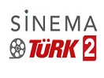
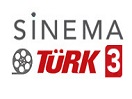
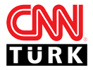
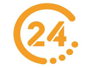
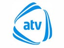
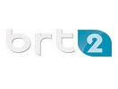

|
|
-
ULUSAL KANALLAR

TRT 1
ATV
ATV Avrupa
Star TV
EuroStar
FoxTurk
Kanal D
Euro D TV
Show TV
Show Turk
TV8
TV8 Int
TV8.5
Kanal 7
Beyaz TV
360 TV
teve 2
TRT 2
TRT Turk
SINEMA KANALLARI

Sinema Turk 1- 
Sinema Turk 2 - 
Sinema Turk 3
Yesilcam TV - 1
Yesilcam TV - 2
Yesilcam TV - 3
TV Beyaz - Yesilcam
ÇOCUK KANALLARI

Minika Go
Minika Cocuk
BELGESEL KANALLARI
TRT Belgesel
TGRT Belgesel
HABER KANALLARI

Sözcü TV
Halk TV
KRT TV
TELE1
Flash Haber TV
Arti TV
NTV- 
CNN Turk 
Haber Turk
Haber Global
Bloomberg HT- 
Kanal 24 
TGRT Haber
TRT Haber
SPOR KANALLARI

beIN Sports Haber
Tivibu Spor
A Spor
TRT Spor
TRT Spor Yildiz
TRT Spor 3
Idman TV
CBC Sport Az
Sports TV
Fenerbahce TV
MÜZIK KANALLARI

TRT Muzik
Number 1 Turk
Tatlises TV
KRAL POP TV
Power TV
Dream Turk
Mavi Karadeniz
YEREL KANALLARI
TV100
Ulke TV
TGRT EU
Bengu Turk
EM TV
TIVI6
TV4
Altas Ordu TV
Sat7 Turk
TRT Arapca
TRT Kurdi- 
ATV AZAD
AZ TV
Dunya TV
CBC TV Azerbaijan
Kibris BRT 1- 
Kibris BRT 2
Kibris BRT 3
TV2020 Kibris
Kibris Genc TV
Kibris Kanal T
Kibris Ada TV
Kibris TV
Super RTL
VOX
VOX up
Türkiyeden VPN ile izle